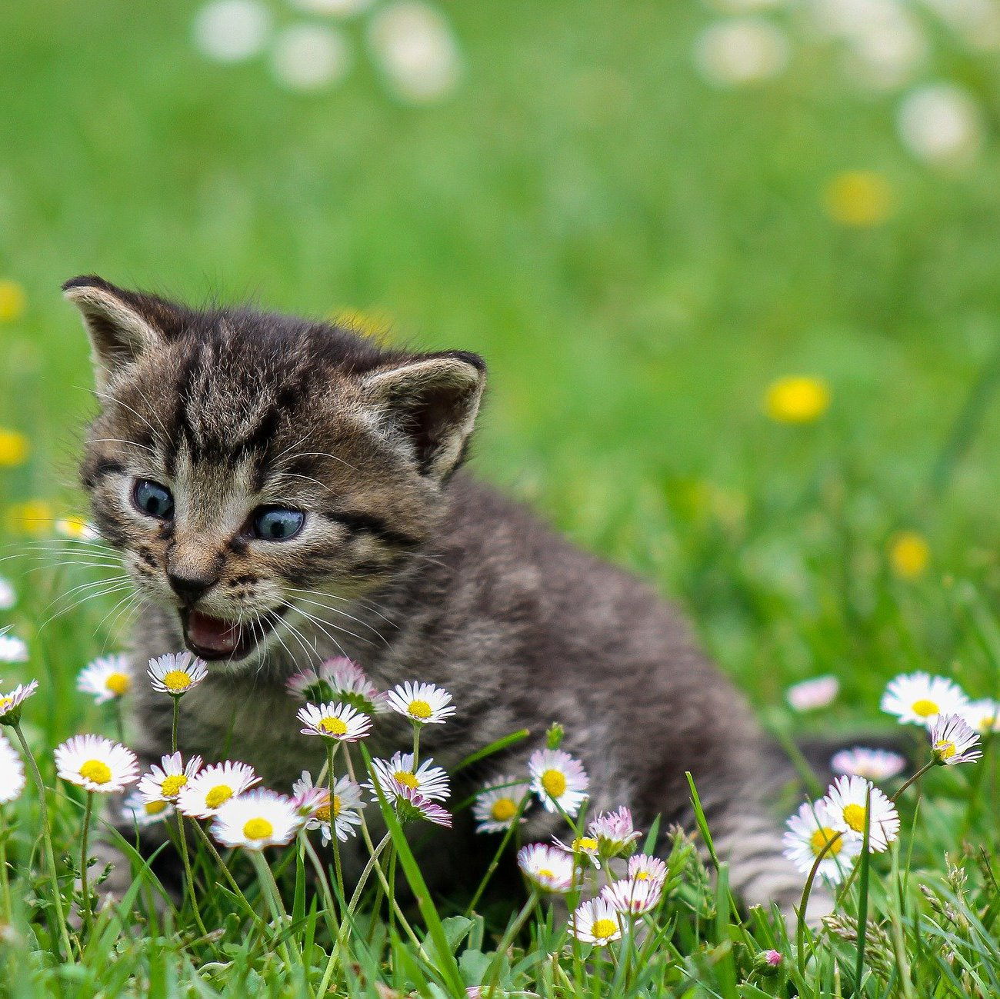
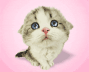
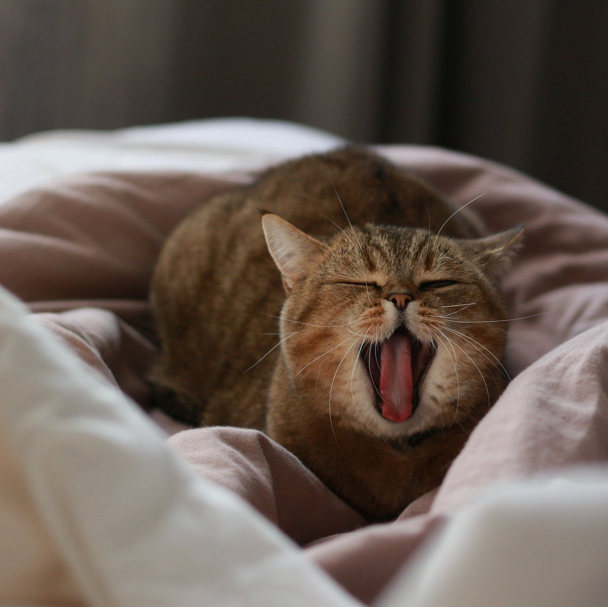
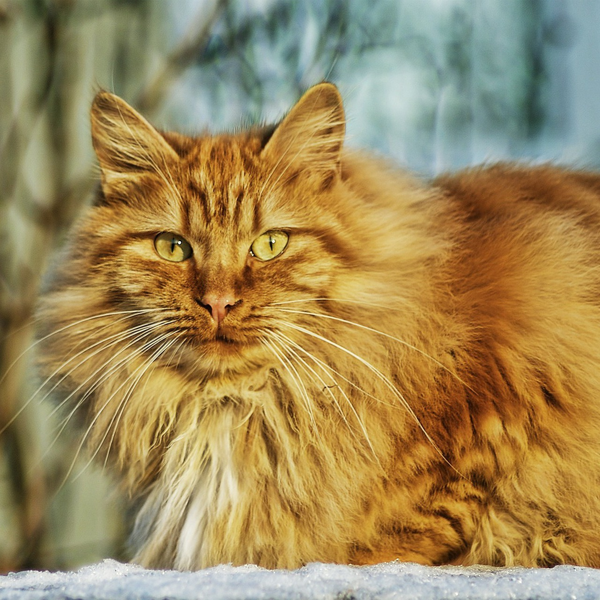
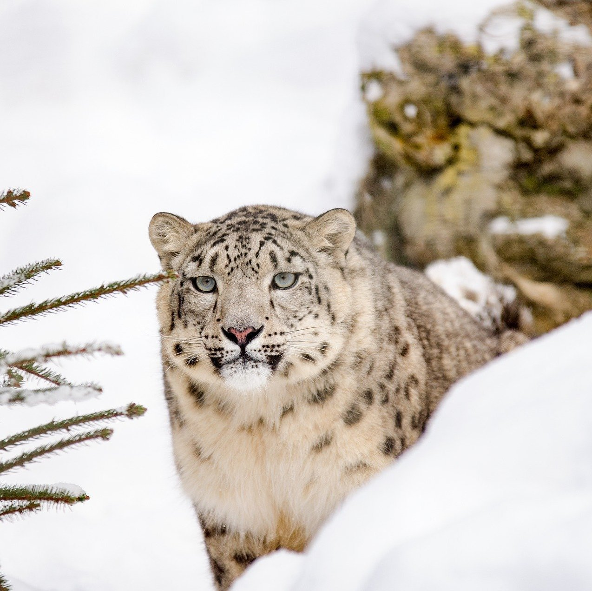

Le super site des Chachats !
Un Pitichat
Les Pitichats sont pitis et mignons même s'ils sont un peu cons, genre, ils courent après leur ombre et sont méga fiers d'eux. Alors que bon, en vrai, ils font que de bouffer et de miouter. Aussi, ils sautent sur les murs.
Un Moyenchat
Les Moyenchats sont moyens et mignons même ce ne sont que de gros branleurs qui font rien de de fumer des pétards et jouer au babyfoot. Aussi, ils viennent se frotter leur museau qui sent la vieille croquette sur leur humain de compagnie.
Un Grochat
Les Grochats sont gros et mignons même si quand on les pousse ils roulent. D'ailleurs c'est très pratique pour faire des bonhommes de neiges mais après ils sont vénères alors ils font pipi dans les chaussures de leur humain. Aussi, ils ramènent des souris mortes mais pas tout à fait sur le paillasson.
Un Trégrochat
Les Trégrochats sont très gros et mignons. Ils ressemblent à des Grochats gonglés à l'hélium, surtout en hiver mais attention, comme ils sont très gros, ils peuvent manger des Trégrotrucs. Ils sont du meilleur effet dans votre salon mais vous aurez l'air con quand ils vont auront arraché un bras. Aussi ils ont pas trop froid dans la neige.